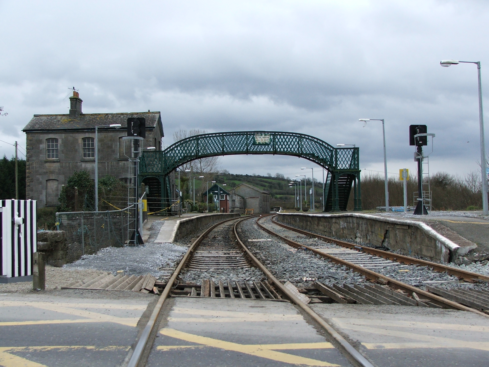

(출처: 위키미디어 커먼즈 https://commons.wikimedia.org/wiki/File:Farranfore_train_station.jpg 저작자: Kglavin
CC BY-SA)
광궤는 1435mm보다 넓은 모든 궤간을 부르는 명칭이다.
광궤는 범위가 큰데, 1445mm의 이탈리안 광궤, 1495mm의 토론토 궤간, 1668mm의 이베리아 궤간 등이 있으며, 철도의 태동기에 표준궤와 경쟁한 브루넬 궤간(2140mm)도 광궤에 속한다.
3000mm라는 다소 극단적인 넓이의 광궤도 시도되었는데, 이 궤간은 독일 정권을 잡은 나치당에 의해 시도된 바 있다.
사진속의 궤간은 1600mm의 광궤로, 저 궤간은 아일랜드 궤간으로 불린다.
광궤는 표준궤에 비해 수송량이 많다는 장점이 있다. 선로가 넓으니 열차의 폭을 더 넓게 만들 수 있기 때문이다. 고속 주행에 유리하다는 장점 역시 가지고 있다. 그러나 건설비가 비싸고, 토지를 많이 차지한다는 점이 단점이다. 또, 급커브에 불리하기 때문에 산악 지형에 부적절하다. 수요가 적은 시골에서는 유용하지 않다.
광궤는 러시아를 비롯한 소련의 옛 구성국들과 그 인근 국가에서 많이 쓰인다. 또, 이베리아(에스파냐, 포르투갈)에서도 널리 쓰이고 있으며, (독립국인) 아일랜드와 (영국의 영토인) 북아일랜드에서도 사용되고 있다. 인도와 아르헨티나, 칠레에서도 광궤 철도를 볼 수 있다.
위에서 언급한 독일은 기본적으로 표준궤를 쓰고 있다. 다만 몇몇 트램 노선이 예외적으로 광궤를 쓰고 있다.